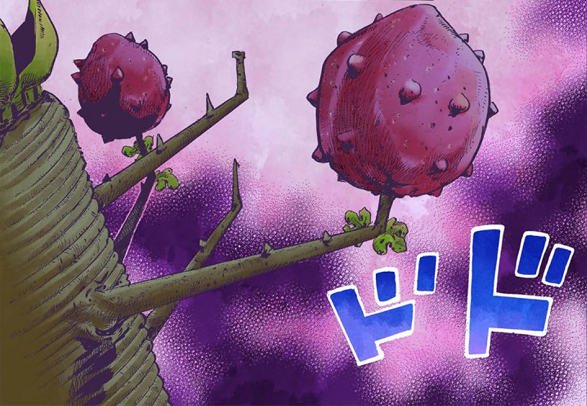

Recipes for disaster...
-
F̴̬͛̄Ò̸̠R̵̫̂B̷͈͕͌̚I̸̫̽̏D̸̢̤̍̂Ỉ̴̡N̵̞͓̅͝ ̵̨̭̓F̴͚̭͊͝Ř̸͓̚Ǘ̵͚̙T̷̖͓̊̄Ë̸̬́̂ ̷̢́͠
-
Senzu Beans
-
borger
The F̴̬͛̄Ò̸̠R̵̫̂B̷͈͕͌̚I̸̫̽̏D̸̢̤̍̂Ỉ̴̡N̵̞͓̅͝ ̵̨̭̓F̴͚̭͊͝Ř̸͓̚Ǘ̵͚̙T̷̖͓̊̄Ë̸̬́̂ ̷̢́͠<
Directions:
One tbs. of suger
5 grams of ████████
8 cups of water
